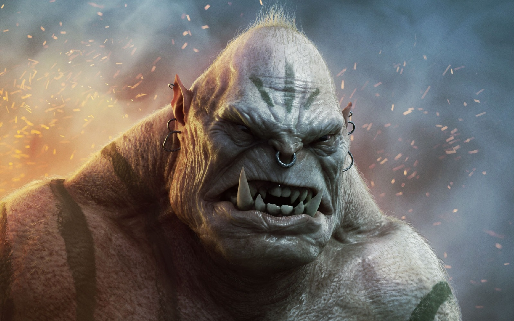

The Orcs
Fierce and Proud Warriors
Orcs are fierce, strong, and proud warriors often misunderstood in many fantasy tales. With their imposing stature and iron-clad determination, they roam vast lands and rugged wildernesses, thriving in harsh environments.
Despite their fearsome reputation, orcs have complex social structures, rich traditions, and code of honor that govern their communities. Their strength and valor make them respected foes and valuable allies when common goals arise.
Orcish Society and Culture
Orc tribes are led by chieftains and shamanic figures, where the bond of clan and loyalty shape their lives. Their culture is steeped in rites of passage, warrior challenges, and tribal stories passed down through generations.
Orc music and art often reflect their rugged life, using drums, war chants, and carvings as forms of expression. Their deep connection to the land fuels their fierce independence and resilience.
Legends and Impact
Orcs feature prominently in many epic tales as both antagonists and heroes. Their fierce loyalty, uncompromising spirit, and fierce battle cries have solidified their place as iconic figures in fantasy realms worldwide.
Orcish History
-
🔥Awakening of the First Clans in the Ashen Wastes.
-
🪓War of the Warring Tribes — unification under the Bloodtooth Banner.
-
☠️Pact with the Bone Shamans — rise of blood rituals and spirit-binding.
-
⚔️Siege of the Eastern Peaks — conflict with dwarves begins.
-
🌑Eclipse War — alliance with dark sorcerers and shadow beasts.
-
👣The March of Iron — orcs overrun ten human cities in the Northlands.
-
🛡️Battle of Black Crag — defeat by combined elven-dwarven armies.
-
⛓️Orcish Diaspora — scattering into smaller warbands and rogue factions.
-
🧠Rise of the Mindfang — the first orc philosopher-warrior seeks unity through wisdom.
-
🔥Present Day — clans gather under a new Warchief to reclaim ancient lands.